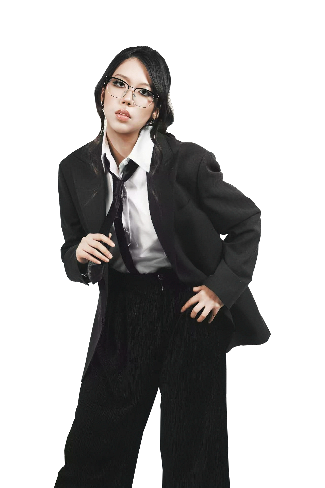

AED Training Module
一个面向大众的 AED 急救训练交互网页，把紧张的急救流程做成“引导式学习 + 练习 + 复习”的体验。用户可以按步骤理解每一次操作该做什么、为什么这么做，并通过交互练习加深记忆，降低真实场景中的慌乱与出错率。
AI交互体验设计师
AI Physical Interaction Designer
我专注 AI Interaction 与 Physical Experience 的交互设计，擅长把复杂流程转化为可理解、可练习的互动系统。

从 AI learning interface 到空间互动装置，我关注“人如何在真实情境里做决定、产生情绪、并得到反馈”。我擅长把复杂流程拆成清晰的交互步骤，并用可视化与前端原型让概念落地。我的目标是做能被理解、能被使用、也能让人感觉舒服的 AI + Physical 交互体验。
AI Interaction Systems
一个面向大众的 AED 急救训练交互网页，把紧张的急救流程做成“引导式学习 + 练习 + 复习”的体验。用户可以按步骤理解每一次操作该做什么、为什么这么做，并通过交互练习加深记忆，降低真实场景中的慌乱与出错率。
一个用于展示数据与运营状态的可视化仪表盘。把分散的数据整合成清晰的界面层级，让用户能快速看到重点指标、理解变化趋势，并更容易做出下一步判断（例如关注异常、对比不同周期等）。
AI + Spatial Interaction
情绪怪物
一个把"情绪"做成可被看见、可被触发的互动概念项目。我用角色与环境之间的关系来表达情绪变化，让观众不需要专业背景，也能直观感受到"情绪是如何被唤起、如何被安放"的。
云朵交互装置
一个结合空间结构与互动行为的装置概念，探索 AI 与 physical interaction 的结合方式。重点在于：观众的动作如何被装置理解并回应、如何产生即时反馈，以及如何让互动过程更像"在空间里发生的体验"，而不仅是按按钮。
UX Interaction
面向社群用户的交互式网站，通过更清晰的信息结构与浏览节奏，让用户更容易找到内容、参与活动并持续探索。重点在于路径引导、内容呈现节奏与基本交互细节的优化。
Visual System / Typography
一个品牌视觉规范与版式系统整理项目，把视觉语言变成可落地的规则文档，确保品牌在不同场景与载体中保持一致、清晰、可复用。
围绕字形结构与分类逻辑的网页项目，通过可视化与网页实现来帮助理解 typography 的节奏、结构与可读性。重点在于信息组织方式与交互呈现，让内容更好读、更好看。